KrigingAlgorithm¶
-
class
otgu.KrigingAlgorithm(*args)¶ Kriging algorithm.
Refer to Kriging.
- Available constructors:
KrigingAlgorithm(inputSample, outputSample, covarianceModel, basis, normalize=True)
KrigingAlgorithm(inputSample, outputSample, covarianceModel, basisCollection, normalize=True)
Parameters: - inputSample, outputSample : 2-d sequence of float
The samples
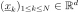
and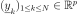
upon which the meta-model is built.- covarianceModel :
CovarianceModel Covariance model used for the underlying Gaussian process assumption.
- basis :
Basis Functional basis to estimate the trend (universal kriging):
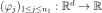
.If
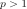
, the same basis is used for each marginal output.- basisCollection : sequence of
Basis Collection of
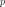
functional basis: one basis for each marginal output: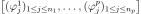
. If the sequence is empty, no trend coefficient is estimated (simple kriging).- normalize : bool, optional
Indicates whether the input sample has to be normalized.
Default value is True. It implies working on centered & reduced input sample.
Notes
We suppose we have a sample
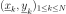
where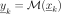
for all k, with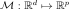
the model.The meta model Kriging is based on the same principles as those of the general linear model: it assumes that the sample
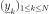
is considered as the trace of a Gaussian process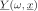
on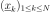
. The Gaussian process is defined by:(1)¶
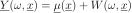
where:
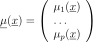
with
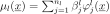
and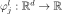
the trend functions.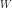
is a Gaussian process of dimension p with zero mean and covariance function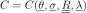
(seeCovarianceModelfor the notations).The estimation of the all parameters (the trend coefficients
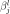
, the scale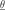
and the amplitude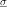
) are made by theGeneralLinearModelAlgorithmclass.The Kriging algorithm makes the general linear model interpolary on the input samples. The Kriging meta model
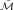
is defined by: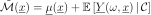
where
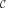
is the condition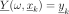
for each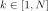
.(1) writes:
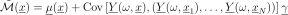
where
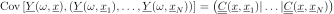
is a matrix in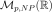
and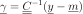
.A known centered gaussian observation noise
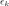
can be taken into account withsetNoise():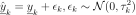
Examples
Create the model
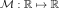
and the samples:>>> import openturns as ot >>> f = ot.SymbolicFunction(['x'], ['x * sin(x)']) >>> sampleX = [[1.0], [2.0], [3.0], [4.0], [5.0], [6.0], [7.0], [8.0]] >>> sampleY = f(sampleX)
Create the algorithm:
>>> basis = ot.Basis([ot.SymbolicFunction(['x'], ['x']), ot.SymbolicFunction(['x'], ['x^2'])]) >>> covarianceModel = ot.SquaredExponential([1.0]) >>> covarianceModel.setActiveParameter([]) >>> algo = ot.KrigingAlgorithm(sampleX, sampleY, covarianceModel, basis) >>> algo.run()
Get the resulting meta model:
>>> result = algo.getResult() >>> metamodel = result.getMetaModel()
Methods
getClassName(self)Accessor to the object’s name. getDistribution(self)Accessor to the joint probability density function of the physical input vector. getId(self)Accessor to the object’s id. getInputSample(self)Accessor to the input sample. getMethod(self)Linear algebra method accessor. getName(self)Accessor to the object’s name. getNoise(self)Observation noise variance accessor. getOptimizationAlgorithm(self)Accessor to solver used to optimize the covariance model parameters. getOptimizationBounds(self)Accessor to the optimization bounds. getOptimizeParameters(self)Accessor to the covariance model parameters optimization flag. getOutputSample(self)Accessor to the output sample. getReducedLogLikelihoodFunction(self)Accessor to the reduced log-likelihood function that writes as argument of the covariance’s model parameters. getResult(self)Get the results of the metamodel computation. getScalePrior(self)Accessor to the scale prior type. getShadowedId(self)Accessor to the object’s shadowed id. getVisibility(self)Accessor to the object’s visibility state. hasName(self)Test if the object is named. hasVisibleName(self)Test if the object has a distinguishable name. run(self)Compute the response surface. setDistribution(self, distribution)Accessor to the joint probability density function of the physical input vector. setMethod(self, method)Linear algebra method set accessor. setName(self, name)Accessor to the object’s name. setNoise(self, noise)Observation noise variance accessor. setOptimizationAlgorithm(self, solver)Accessor to the solver used to optimize the covariance model parameters. setOptimizationBounds(self, optimizationBounds)Accessor to the optimization bounds. setOptimizeParameters(self, optimizeParameters)Accessor to the covariance model parameters optimization flag. setScalePrior(self, likelihoodPrior)Accessor to the scale prior type. setShadowedId(self, id)Accessor to the object’s shadowed id. setVisibility(self, visible)Accessor to the object’s visibility state. -
__init__(self, *args)¶ x.__init__(…) initializes x; see help(type(x)) for signature
-
getClassName(self)¶ Accessor to the object’s name.
Returns: - class_name : str
The object class name (object.__class__.__name__).
-
getDistribution(self)¶ Accessor to the joint probability density function of the physical input vector.
Returns: - distribution :
Distribution Joint probability density function of the physical input vector.
- distribution :
-
getId(self)¶ Accessor to the object’s id.
Returns: - id : int
Internal unique identifier.
-
getInputSample(self)¶ Accessor to the input sample.
Returns: - inputSample :
Sample The input sample .
- inputSample :
-
getMethod(self)¶ Linear algebra method accessor.
Returns: - method : str
Used linear algebra method.
-
getName(self)¶ Accessor to the object’s name.
Returns: - name : str
The name of the object.
-
getNoise(self)¶ Observation noise variance accessor.
Returns: - noise : sequence of positive float
The noise variance
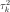
of each output value.
-
getOptimizationAlgorithm(self)¶ Accessor to solver used to optimize the covariance model parameters.
Returns: - algorithm :
OptimizationAlgorithm Solver used to optimize the covariance model parameters.
- algorithm :
-
getOptimizationBounds(self)¶ Accessor to the optimization bounds.
Returns: - problem :
Interval The bounds used for numerical optimization of the likelihood.
- problem :
-
getOptimizeParameters(self)¶ Accessor to the covariance model parameters optimization flag.
Returns: - optimizeParameters : bool
Whether to optimize the covariance model parameters.
-
getOutputSample(self)¶ Accessor to the output sample.
Returns: - outputSample :
Sample The output sample .
- outputSample :
-
getReducedLogLikelihoodFunction(self)¶ Accessor to the reduced log-likelihood function that writes as argument of the covariance’s model parameters.
Returns: - reducedLogLikelihood :
Function The potentially reduced log-likelihood function.
Notes
We use the same notations as in
CovarianceModelandGeneralLinearModelAlgorithm: refers to the scale parameters and the amplitude. We can consider three situtations here:- Output dimension is
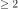
. In that case, we get the full log-likelihood function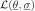
. - Output dimension is 1 and the GeneralLinearModelAlgorithm-UseAnalyticalAmplitudeEstimate key of
ResourceMapis set to True. The amplitude parameter of the covariance model is in the active set of parameters and thus we get the reduced log-likelihood function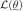
. - Output dimension is 1 and the GeneralLinearModelAlgorithm-UseAnalyticalAmplitudeEstimate key of
ResourceMapis set to False. In that case, we get the full log-likelihood .
The reduced log-likelihood function may be useful for some pre/postprocessing: vizualisation of the maximizer, use of an external optimizers to maximize the reduced log-likelihood etc.
Examples
Create the model and the samples:
>>> import openturns as ot >>> f = ot.SymbolicFunction(['x0'], ['x0 * sin(x0)']) >>> inputSample = ot.Sample([[1.0], [3.0], [5.0], [6.0], [7.0], [8.0]]) >>> outputSample = f(inputSample)
Create the algorithm:
>>> basis = ot.ConstantBasisFactory().build() >>> covarianceModel = ot.SquaredExponential(1) >>> algo = ot.KrigingAlgorithm(inputSample, outputSample, covarianceModel, basis) >>> algo.run()
Get the reduced log-likelihood function:
>>> reducedLogLikelihoodFunction = algo.getReducedLogLikelihoodFunction()
- reducedLogLikelihood :
-
getResult(self)¶ Get the results of the metamodel computation.
Returns: - result :
KrigingResult Structure containing all the results obtained after computation and created by the method
run().
- result :
-
getScalePrior(self)¶ Accessor to the scale prior type.
Returns: - scale_prior : int
The type of prior for the parameters likelihood.
-
getShadowedId(self)¶ Accessor to the object’s shadowed id.
Returns: - id : int
Internal unique identifier.
-
getVisibility(self)¶ Accessor to the object’s visibility state.
Returns: - visible : bool
Visibility flag.
-
hasName(self)¶ Test if the object is named.
Returns: - hasName : bool
True if the name is not empty.
-
hasVisibleName(self)¶ Test if the object has a distinguishable name.
Returns: - hasVisibleName : bool
True if the name is not empty and not the default one.
-
run(self)¶ Compute the response surface.
Notes
It computes the kriging response surface and creates a
KrigingResultstructure containing all the results.
-
setDistribution(self, distribution)¶ Accessor to the joint probability density function of the physical input vector.
Parameters: - distribution :
Distribution Joint probability density function of the physical input vector.
- distribution :
-
setMethod(self, method)¶ Linear algebra method set accessor.
Parameters: - method : str
Used linear algebra method. Value should be LAPACK or HMAT
Notes
The setter update the implementation and require new evaluation. We might also use the ResourceMap key to set the method when instantiating the algorithm. For that purpose, we can use ResourceMap.SetAsString(GeneralLinearModelAlgorithm-LinearAlgebra, key) with key being HMAT or LAPACK.
-
setName(self, name)¶ Accessor to the object’s name.
Parameters: - name : str
The name of the object.
-
setNoise(self, noise)¶ Observation noise variance accessor.
Parameters: - noise : sequence of positive float
The noise variance of each output value.
-
setOptimizationAlgorithm(self, solver)¶ Accessor to the solver used to optimize the covariance model parameters.
Parameters: - algorithm :
OptimizationAlgorithm Solver used to optimize the covariance model parameters.
Examples
Create the model and the samples:
>>> import openturns as ot >>> input_data = ot.Uniform(-1.0, 2.0).getSample(10) >>> model = ot.SymbolicFunction(['x'], ['x-1+sin(pi_*x/(1+0.25*x^2))']) >>> output_data = model(input_data)
Create the Kriging algorithm with the optimizer option:
>>> basis = ot.Basis([ot.SymbolicFunction(['x'], ['0.0'])]) >>> thetaInit = 1.0 >>> covariance = ot.GeneralizedExponential([thetaInit], 2.0) >>> bounds = ot.Interval(1e-2,1e2) >>> algo = ot.KrigingAlgorithm(input_data, output_data, covariance, basis) >>> algo.setOptimizationBounds(bounds)
- algorithm :
-
setOptimizationBounds(self, optimizationBounds)¶ Accessor to the optimization bounds.
Parameters: - bounds :
Interval The bounds used for numerical optimization of the likelihood.
Notes
See
GeneralLinearModelAlgorithmclass for more details, particularlysetOptimizationBounds().- bounds :
-
setOptimizeParameters(self, optimizeParameters)¶ Accessor to the covariance model parameters optimization flag.
Parameters: - optimizeParameters : bool
Whether to optimize the covariance model parameters.
-
setScalePrior(self, likelihoodPrior)¶ Accessor to the scale prior type.
Allows to choose bayesian priors.
Parameters: - scale_prior : int
The type of prior for the parameters likelihood. Available values:
- GeneralLinearModelAlgorithm.NONE: no bayesian prior (default)
- GeneralLinearModelAlgorithm.JOINTLYROBUST: jointly-robust prior
- GeneralLinearModelAlgorithm.REFERENCE: reference prior
- GeneralLinearModelAlgorithm.FLAT: flat prior
Notes
Bayesian priors are only available with an 1-d output.
-
setShadowedId(self, id)¶ Accessor to the object’s shadowed id.
Parameters: - id : int
Internal unique identifier.
-
setVisibility(self, visible)¶ Accessor to the object’s visibility state.
Parameters: - visible : bool
Visibility flag.